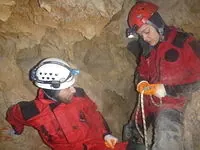
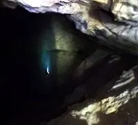

İnsuyu Mağarası Çalışması
Burdur İnsuyu Mağarası'nda yürütmekte olduğumuz haritalama projesinin 5. etabı yorucu, zorlayıcı ama bir yandan da çok keyifli ve verimli geçti. Ölçümlenen yeni galeri miktarı (~250, 300 m) kısıtlı olmasına rağmen başarılı bir çalışma olduğunu söyleyebiliyoruz. Zira artık mağaranın kolay ulaşılan kısımlarında yapılacaklar bitti ve çalışılacak yeni galerilere ulaşmak için çok daha yüksek miktarda efor ve zaman gerekiyor.

Örneğin, daha önceki çalışmanın son gününde keşfettiğimiz yeni bir gölün başına ulaştığımızda su seviyesinin 3.5 m aşağımızda kaldığını gördük. Teknik iniş/çıkış malzemelerimiz olmadan negatif eğimli duvarda geriye çıkış imkânsız olacaktı. Deniz, yegane ipimize kelebek düğümlü basamaklar yaparak bu soruna emprovize bir çözüm getirdi. Ancak asıl problemle yüzerek gölün karşısına geçtiğimizde karşılaştık: Devam eden galeri de su seviyesinden 3.5 m yukarıda bir kotta idi. Suda yüzer durumdan (mağaranın bu bölgesine bot taşımak neredeyse imkânsız), ayak basacak hiç bir çıkıntı olmadan, İnsuyu'nun çürük kaya yapısında bu düz duvarı tırmanmak ilk gün mümkün olmadı. İkinci gün, daha hazırlıklı idik. Önce alt seviyede bir takoza takılı perlondan ayak basamağı yaparak bir kademe yükselebildik. Ancak bundan sonrasında el attığımız her kaya elimize geliyor ve tekrar tekrar suya inerek (çoğunlukla düşerek) baştan başlamak zorunda kalıyorduk. Suyun içinde neredeyse bir saat geçip enerjimiz tükenmek üzereyken Utku son denemesinde ikinci bir takozu nihayet ağırlığını taşıyacak üst bir çatlağa yerleştirmeyi başardı. Heyecanlı ve fiziksel olarak zorlayıcı engellerin sadece dikey mağaralarda karşımıza çıkmadığını eğlenceli bir şekilde bir kez daha yaşamış olduk.
Yine son çalışmalarda keşfedilen devasa Aygen Salonu'na ulaşan yaklaşık 300 m'lik harika sulu galeriyi botla aşma heyecanı, bu salonun ihtişamı ve içindeki çok özel kristal oluşumların güzelliği, bu kısımdaki yeni kollarda ölçüm almanın keyfi yanında; yeni keşfettiğimiz bazı galerileri vakit yetersizliğinden ölçemeden dönmek zorunda kalmanın üzüntüsünü de yaşadık.İnsuyu'nda daha yapacak çok iş var ve mağaracılar için sportif açıdan da keyifli ve zorlayıcı bir mağara. 8.5 km'ye yaklaşan ölçülmüş uzunluk, gelecekteki çalışmalarla mutlaka çok daha artacak. o'mag olarak bizler, diğer projelerimize yoğunlaşabilmek için şimdilik bu çalışmaya ara veriyoruz. Bu son gezinin birkaç fotoğrafı galeriye eklendi.